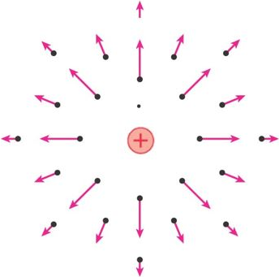
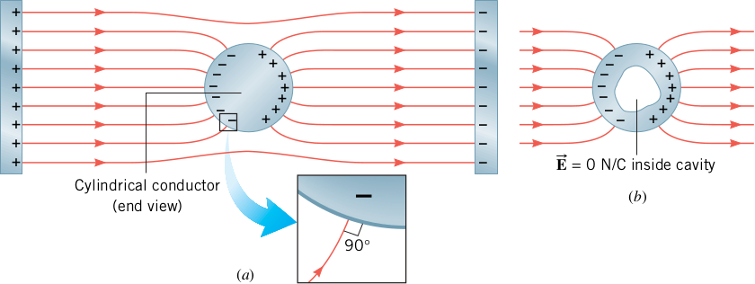

Electric Fields
The gravitational force and the electrostatic force are both capable of acting through space, producing an effect even when there isn’t any physical contact between the objects involved. Field forces can be discussed in a variety of ways, but an approach developed by Michael Faraday (1791 – 1867) is the most practical. In this approach, an electric field is said to exist in the region of space around a charged object. The electric field exerts an electric force on any other charged object within the field. This differs from the Coulomb’s law concept of a force exerted at a distance in that the force is now exerted by something — the field — that is in the same location as the charged object.
The electric field E produced by a charge Q at the location of a small “test” charge q0 is defined as the electric force F exerted by Q on q0 divided by the test charge q0:
E = F/q0 SI unit: newton per coulomb (N/C)
Conceptually and experimentally, the test charge q0 is required to be very small (arbitrarily small, in fact), so it doesn’t cause any significant rearrangement of the charges creating the electric field E. Mathematically, however, the size of the test charge makes no difference: the calculation comes out the same, regardless. In view of this, using q0 = 1 C in Equation 15.3 can be convenient if not rigorous.
Because the magnitude of the electric field at the position of the test charge is defined as E = F/q0, we see that the magnitude of the electric field due to the charge Q at the position of q0 is
E = kQ/r2
Representing electric fields
The electric field of a positive point charge is shown here.
We can measure the force per charge at each point in space that would exist if there was a tiny test charge there. We assume the test charge is tiny so it does not affect the field we are measuring. By convention, we use a positive test charge. The direction of the field is away from the positive test charge.
If the point charge is a negative charge (−Q), the field map will be in the same way but the arrowhead will be reversed.
Sometimes we connect the force vector arrows to depict the field in another way, as electric field lines, which indicate both the magnitude and direction of the electic field. The direction of the field lines has the same convention as the electric field vectors. The denser the field lines, the stronger the magnitude of the electric field. Electric field lines must either originate at a positively charged object or terminate on a negatively charges object (or both)
When representing electric field visually, we are often force to draw two-dimensional representations of 3D situations. The electric field is three-dimensional; we must imagine the third dimension because we cannot draw it on a two-dimensional surface; The direction of the electric field at any position is tangent to the elctric field line and in the direction indicated by the arrowhead on the field line. To find the density of the electric field lines, imagine a set of surfaces perpendicular to the field line; the more lines per unit area passing through one of these surfaces, the stronger the electric field. Figure 2. shows electric field line along with vectrors representing the electric fields at four location, points A, B, C, D. Notice that the electric field line cannot cross because then there would be two possible directions for the electric field at their point of intersection.
The rules to depict electric field line are as follows
Electric lines of force start from a positive charge and end on a negative charge.
The tangents drawn on any point on the line of force gives the direction of force acting on the positive charge at that point.
No two lines of force can interact with each other. If they interact the force has two directions at that point of interactions and this is not possible.
The electric force lines do not pass through a conductor making the electric field inside a conductor always zero.
We shall see the reason for condition d) when studying conductors, the following figure depicts the situation in such cases
